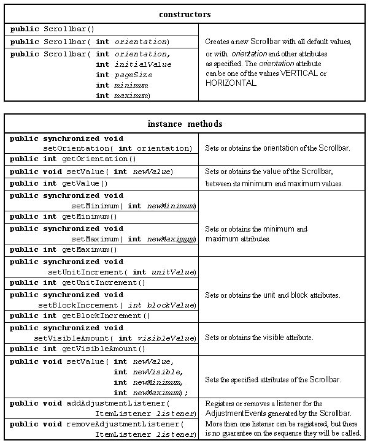
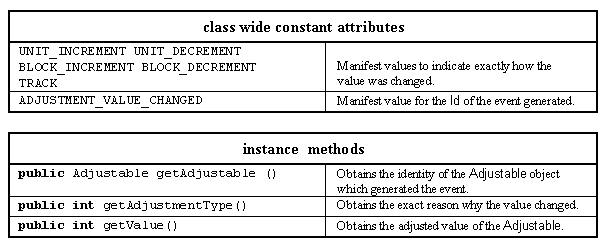
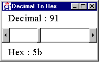
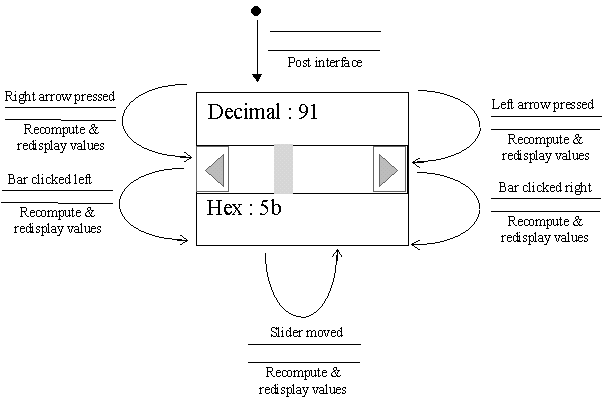

The Scrollbar class provides an area containing a slider which can be dragged from one end of the bar to the other to indicate a quantitative value, and arrow icons at each end which can be used for fine adjustment of the slider. The major resources of this class are presented in Table 2.16.

Table 2.16 Major resources of the Scrollbar class.
A Scrollbar's orientation attribute determines if it is presented to the user in a HORIZONTAL or VERTICAL direction. The minimum and maximum attributes determine the value of the left (or top) and right (or bottom) of the Scrollbar and the value is determined by the location of the slider, whose size is controlled by the visible attribute. Clicking either of the arrow icons at the ends of the bar will adjust the value by the unit attribute and clicking on the scroll bar outside the extent of the slider will adjust the value by the block attribute.
If no explicit values are established for these attributes then the default orientation is VERTICAL, minimum is 0, maximum is 100, value is 0 and visible is 10. Unit increment will default to 1 and to block increment to the visible value.
Whenever the value of the Scrollbar is changed an AdjustmentEvent is generated and dispatched to any AdjustmentListener objects which are registered with it. The major resources of the AdjustmentEvent class are presented in Table 2.17.

Table 2.17 Major resources of the AdjustableEvent class.
As it is difficult to give an example of the use of a Scrollbar without embedding it in an applet, the example in this section will implement a DecimalToHex converter. The appearance of this applet is shown in Figure 2.11. It is used to convert between decimal and hexadecimal values in the (decimal) range 0 to 255.

Figure 2.11 A Scrollbar based DecimalToHex applet.
The State Transition Diagram for this applet is given in Figure 2.12. It shows that there is a single state with five transitions, one for each possible user action. The single state and small number of transitions, all without preconditions, suggests that the applet should be simple and intuitive to use.

Figure 2.12 The DecimaltoHex applet's STD.
The init() method of the DecimalToHex class creates the interface which consists of two Labels and a Scrollbar mounted on the applet's Panel in a three by one GridLayout.
0001 // Filename DecimalToHex.java.
0002 // Provides an example of the AWT Scrollbar class.
0003 // Written for the Java interface book Chapter 2 - see text.
0004 //
0005 // Fintan Culwin, v 0.2, August 1997.
0006
0007 import java.awt.*;
0008 import java.awt.event.*;
0009 import java.applet.*;
0010
0011
0012 public class DecimalToHex extends Applet
0013 implements AdjustmentListener {
0014
0015 private Scrollbar scroller;
0016 private Label decimalLabel;
0017 private Label hexLabel;
0018
0019 public void init() {
0020
0021 this.setLayout( new GridLayout( 3, 1, 5, 5));
0022
0023 scroller = new Scrollbar( Scrollbar.HORIZONTAL, 0, 1, 0, 255);
0024 scroller.setBlockIncrement( 10);
0025 scroller.addAdjustmentListener( this);
0026
0027 decimalLabel = new Label();
0028 hexLabel = new Label();
0029
0030 this.add( decimalLabel);
0031 this.add( scroller);
0032 this.add( hexLabel);
0033
0034 this.update();
0035 } // End init.
The identities of the three components will be required by other methods within the class so they are declared as private data attributes outside the scope of any method on lines 0015, 0016, 0017. The init() method is comparable to the other init() methods previously presented in this chapter. The Scrollbar constructor on line 0023 creates a horizontal Scrollbar instance with an initial value of 0, a visible size of 1, a minimum of 0 and a maximum of 255. The unit increment defaults to 1 and on line 0024, the block increment is set to 10. On line 0025 the AdjustmentListener is specified as this, which requires the DecimalToHex class to implement the AdjustmentListener interface, as stated on line 0013.
A 3 row by 1 column GridLayout is specified on line 0021 to produce the required relationship between the three components, which are added in the appropriate sequence on lines 0030 to 0032. No explicit value is specified for either of the Label components as the call to the update() method on line 0033 will supply them.
In order to implement the AdjustmentListener interface the DecimalToHex class has to declare an adjustmentValueChanged() method, as follows. This method indirects to the update() method to cause the values shown on the two Labels to change in order to reflect the new value of the Scrollbar.
0038 public void adjustmentValueChanged( AdjustmentEvent event) {
0039 this.update();
0040 } // End adjustmentValueChanged.
0041
0042
0043 protected void update() {
0044
0045 int theValue = scroller.getValue();
0046 String decimalValue = new String( Integer.toString( theValue, 10));
0047 String hexValue = new String( Integer.toString( theValue, 16));
0048
0049 String decimalString = new String( "Decimal : " + decimalValue);
0050 String hexString = new String( "Hex : " + hexValue);
0051
0052 decimalLabel.setText( decimalString);
0053 hexLabel.setText( hexString);
0054 } // End update.
The purpose of this method is to obtain the value of the slider, format it as a decimal and as a hexadecimal string and then install the Strings into the two Labels. The precise details of this process are not relevant to the consideration of the construction of the user interface. Briefly the value is retrieved as an int on line 0045, formatted on lines 0046 and 0047, catenated with the prompts on lines 0049 and 0050 and installed into the Labels on lines 0052 and 0053.
The user can interact with this interface by dragging the slider with the values being continually updated. Alternatively they could click on one of the arrows to increment or decrement the value by 1, or click on the scrollBar outside the slider to increment or decrement the value by 10.
Design Advice
Use a ScrollBar for the input of quantitative data only when the range is relatively small; otherwise consider using a TextField.